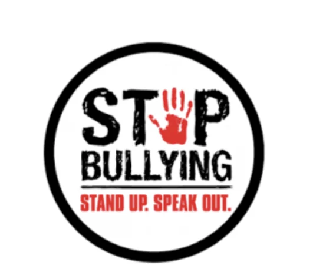
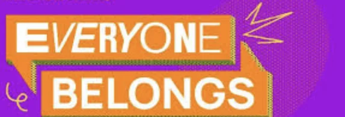
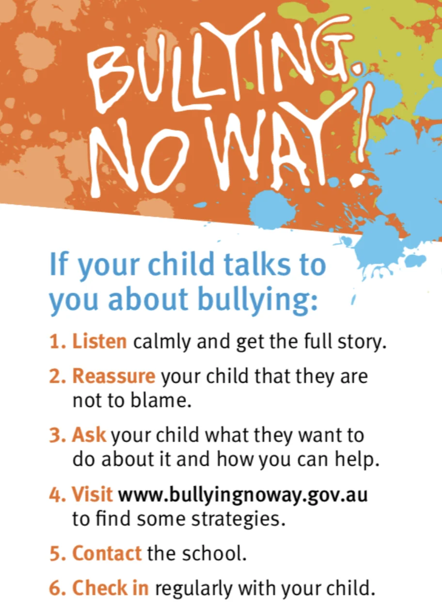

Bullying No Way: National week of action
Bullying happens, no matter how young or how old you are. This Action Week is very important as it reminds us that bullying is dangerous and not good for anybody and we all can take actions to stop bullying.
2025 theme
2025 theme
The theme for 2025 is 'Be bold. Be kind. Speak up.'
It takes courage to spark change!
Bullying is everyone's responsibility. It takes a community to be brave and do something about bullying behaviours, whenever, wherever they happen.
Everyone of you can be bold, kind and take a stand to support others being bullied. While parents, teachers and other grown ups usually support children and young people learn how to behave in a positive way, this doesn’t always happen. No matter who bullies you, be brave and tell someone you trust about who is bullying you and tell that person or persons what happened.
We want our country, state, neighbourhood, community, schools, early childhood centres and homes all to be places where everyone can belong, is safe, are places that celebrate everyone for who they really are, and where bullying is never okay or accepted.

This Bullying - No Way Week, initiated by our government and people who care about you are asking young people of all ages, students, schools, families and communities to be bold and speak up about bullying, be kind and support others in need, and be proud to take a stand against bullying.
There are many different types of bullying. People can say horrible things about you that aren’t true, they can fight and hurt you, they can bully you online too. Bullying can include spreading rumours, threatening, blackmailing, stealing friends, breaking secrets, gossiping, criticising clothes, personalities and what we can or can’t do through no fault of our own.
We are all human and sometimes are angry and upset and say things or do things we wouldn’t usually do. If that only happens once or very rarely, that’s not bullying. That's taking out how you feel on, or about someone else. When you realise what you have done and how you feel when someone treats you like that, the best thing to do is say sorry and be kind to whoever you think you hurt. Being kind helps others see what it feels like and will want to be kind to others too. Remember how good you felt when you were kind to somebody and how you feel when someone is kind to you and helps you.
Remember that what is said online can be seen by so many people and if you are bullying other people online many people who look at it will call you a bully, not just the person or people you are being mean to. Think about whatever you put online and if you know it could be hurting people wherever they are and they may want to hurt you too, don’t put it online or take it down if it's already online. Someone you trust can help you with these things too.
This website is for you and other young people. If you have ideas about what you can do that could help stop bullying, share them.That is another way of being being brave and kind, speaking up on a video, or with written words or pictures sharing your ideas of ways to stop bullying and what you can do if you have been bullied and or for when you might be bullied. Just go to our and your Activities page and share these ideas.
You could also ask grownups to look at this:
